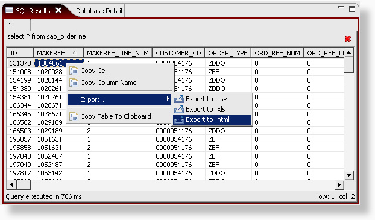
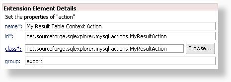

Using the net.sourceforge.sqlexplorer.dataSetTableContextAction extension point, it's possible to add new context actions to the result table.

In comparison to the other extension points, we have one new property available in the extension point definition: group. This value can be left blank, or you can enter the only supported value at this time: export. When export is entered as a value, the action will be appended to actions in the export submenu rather than the main menu.

Every action must extend AbstractDataSetTableContextAction. This provides the protected attribute _table, which is a handle to the result table table widget. Have a look here for some sample code on how the export to CSV works.